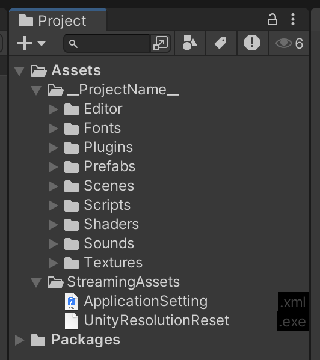
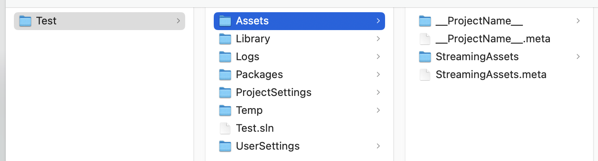
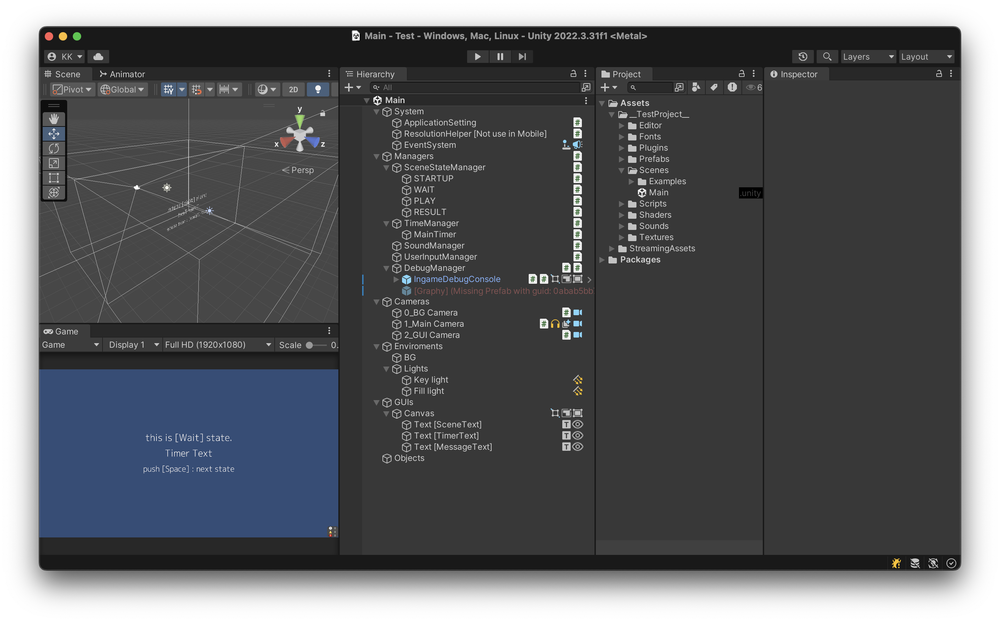
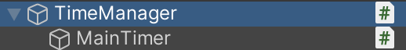
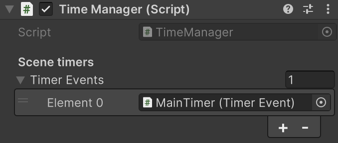
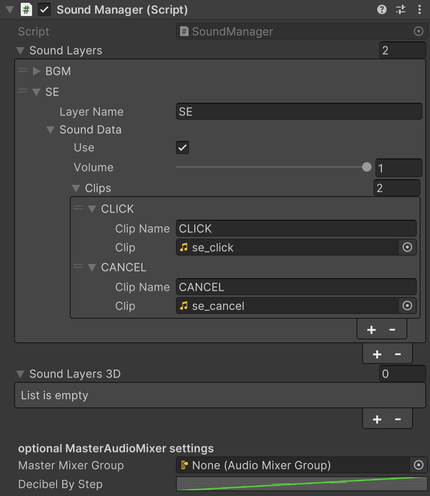

Beginners Tutorial
This tutorial is aimed at beginners, but does not explain the basic operations of the tools. Along with tips for developing with Unity, we will explain the development flow in the early stages of development, introduce how to use this package, and provide a comprehensive explanation of the concepts behind the program code.
What is GarageKit for Unity？
This is a convenient Unity package that provides templates for basic scene state transition functions and can be used as a C# framework along with a number of utility scripts.
A transition system based on the State pattern, one of the programming design patterns, will be able to handle all kinds of cases by learning the basic rules. It's important to have certain rules in your code. A clean and unified codebase will help reduce bugs and bring order.
Most of the functionality is a single component that follows the Unity MonoBehaviour lifecycle and works simply by attaching a script to a GameObject. Since it is a thin framework layer, it is easy to use it in combination with other assets.
As the name suggests, it is a tool to accelerate the start of your project!
1. Preparation
1-1. Create a project
Create a new project.
1-2. PackageManager settings
When using GarageKit, you will need to import several dependent libraries. (There is no problem even after importing GarageKit.unitypackage.)
Open Window/PackageManager from the menu.

You can remove unnecessary packages first. It's a good idea to add it whenever you need it.
- Unity comes with a lot of imports in its initial state. It is also related to build capacity, etc., so try to delete unnecessary packages as much as possible. In some cases, you may run into problems caused by unnecessary packages.
UnityUI,TextMeshProandVisualStudioEditorare all you need to get started. (Dependent packages are automatically imported.)
If the following packages are not already imported into the project, import them.
- from UnityRegistry
TextMeshPro: Package for handling text display in uGUI.
- from AssetStore
DOTween: Animation script package (Free).
1-3. OpenUPM
Next, import the following packages from OpenUPM.
Note
OpenUPM: An open source package manager/registry for Unity libraries. If you have never used it, take this opportunity to learn how to use it.
https:/openupm.com/docs/getting-started-cli.html
In-game Debug Console: A package that displays the runtime console at runtime, mainly for debugging purposes.UniTask: A package that makes it easier to handle C# asynchronous processing with Unity.
Open (Win)CommandPrompt/(Mac)Terminal, change to the project directory, and run the openupm command for the above two packages.
Clicking the button at the top right of the site copies the necessary commands to the clipboard, which is convenient. Just paste it and run it.

Return to Unity and check the Project window.
About the Packages directory
Packages imported with PackageManager or OpenUPM are managed as a Packages directory, separate from project data.

You cannot edit external packages that are managed in the Packages directory yourself. This is safe in that you cannot break the external package's source code. In addition, if you need to move your work PC environment, or when you pass project data to someone else, when restoring project data, being able to download the specified package means that you will always be able to reproduce the environment.
Of course, there are times when modifications are absolutely necessary. In this case, you can edit the package data by manually importing it into the project and managing it without using PackageManager.
1-4. Importing GarageKit package
Now, drag and drop GarageKit.unitypackage into the Project window to import it.

Once the import is complete, you may see errors depending on your project settings environment. Let's fix it by changing the project settings.

Open File/BuildSetting from the menu and set TargetPlatform to Windows.
Open File/BuildSetting/PlayerSetting from the menu and change ApiCompatibilityLevel to .NET Framework from the Configuration item.
Note
The sources where the error is displayed are SerialPortController.cs and StandalonePlayerResolutionHelper.cs. This error is displayed because .NET Standard 2.1 does not include the classes required for compilation.
1-5. Organizing the project structure
Once the error is resolved, check the Project window again.
Manually imported data is added in folders. The sample scene data that is automatically created when the project is initially created is unnecessary, so delete the entire Scenes folder.
All project data will be managed in this Project window. This window shows the status of files in the actual directory.
With a file selected in the Project window, you can open it in the OS's file browser from the right-click menu (Win)Show in Explorer/(Mac)Reveal in Finder. Please check the actual folder location.

Return to Unity and rename the __ProjectName__ folder to your working project name. **Please rename in the Project window. **
Note
Leaving __ is recommended, but optional. This is an effective way to make your project data folder easier to find so it doesn't get buried under other folders. ProjectWindow automatically sorts by name.
Note
Also, please refrain from using Japanese file names in all subsequent development work. ** Japanese characters (multi-byte characters) are still second-class citizens when it comes to programming and may cause problems.

The first level under the Assets folder is an important starting point for data organization.
Normally, by the end of a project, all kinds of data has been incorporated into the project, so if you work without a strategy, the project folder can easily become chaotic. (This may not be a problem during the most recent work. Will you be able to understand it immediately when you open the data for the first time after a long time? What will happen if someone else takes over the project data?)
Other folders are already expanded under the Assets folder. If you manually import an external .unitypackage, the data will most likely be expanded to the first level. Well-behaved packages are often grouped together in one folder, so a folder for each import package is naturally created in the first level under the Assets folder.
If you consider the project data folder __ProjectName__ as one of the packages, the rules for data organization will become clear. From now on, when importing external .unitypackages, make sure to manage them in separate folders on the first level.
The first layer under the current Assets folder has the following folder structure.
Assets
|- __TestProject__ : project data
|- StreamingAssets : Unity standard external file loading folder
We have prepared folders in advance for various data used within the project. Make sure to organize your data here and always know where your data is in your project.
Assets
|- __TestProject__
|- Animations : for animation data (.anim)
|- Editor : for editor script
|- Fonts : for font data (.otf .ttf ...)
|- Materials : for materiak data (.mat)
|- Meshes : for mesh data (.mesh)
|- Models : for 3D model data (.fbx ...)
|- Plugins : for plugin data (.dll ...)
|- Prefabs : for prefab data
|- Scenes : for scene data (.unity)
|- Scripts : for runtime script (.cs)
|- Shaders : for shader (.shader ...)
|- Sounds : for sound data (.wav .mp3 ...)
|- Textures : for texture data (.png .jpg ...)
Remember that organizing data and information well is the basis of programming.
Even the "programming design patterns" that you often hear about in programming are fundamentally about how to organize source code. How should I organize and structure it? This is a knowledge that makes it easier to think about the structure, and as a result, it leads to a method of building programs that are easier to modify and expand.
About special folders
In Unity, there are some folders that have special names that are reserved in advance. The StreamingAssets folder is one of them.
Some of the things you often see are:
| folder name | function |
|---|---|
| StreamingAssets | Unity standard folder for reading external files. During build, the original file is automatically copied and packaged. |
| Resources | Packaged as compiled data when built. This is an old feature and its use is not recommended. |
| Editor | Place Editor scripts that extend the functionality of UnityEditor itself. The source files inside are automatically compiled and reflected in the Editor immediately. |
| Plugins | Deploy plugins. In the case of Windows, a general .dll created in C++ or C# can be placed and used by accessing it from the C# code. |
| Plugins / iOS | Built into your Xcode project when targeting iOS. |
| Plugins / Android | Built into .apk .aab or AndroidStudio project when targeting Android. If AndroidManifest.xml is placed, it can be forcibly overwritten during build post processing. |
Note
There are others as well, so please check the Unity documentation.
1-6. Git
It's ready to run. But before you run it and start working on it, use the version control tool Git to commit the latest state. This is one of the most important development tasks.
Note
If you don't know how to use Git, first check how to use the basic operations: "initialize a repository," "staging," "commit," and "push". (Since this is not a Unity operation, the explanation will be omitted.)
In Unity, the ``project folder'' is subject to Git version control, but it is not necessary to manage all data. There is a lot of data that does not need to be managed in the Unity project folder (such as automatically generated caches and intermediate files created at each compile time), and each file size is large, so in order to remove them, you need to set .gitignore.
Git initial operation example
- Initialize the Git repository in the project folder.
- Prepare a
.gitignorefile and configure the unmanaged folder. Github has sample gitignore for each development environment, so it's easy to copy it as is. It can be used in any development environment, not just Unity. - Stage the file and make your first commit.
Now you can reset your work and come back here at any time. During development, always commit in the middle of each work. Don't forget to push to the remote repository on your server.
Note
Using Git also means data backup. Since you can restore to any working version at any time using Git, the following actions are pointless. If you are doing so, please stop and use Git's features instead.
- Copy the working folder by date name.
- Include past data that will never be used again in the project "just in case".
- Keep old objects hidden in the scene that are no longer used.
- Keep old unused code in your code.
2. Run
2-1. Open sample scene
Open __ProjectName__/Scenes/Main.unity.
An error will appear because we haven't imported any additional assets for debugging, but you can ignore it for now. Delete the [Graphy] object in the Missing Prefab state under Managers/DebugManager (if necessary, you can use it by downloading it from AssetStore and importing it in advance).
Graphy: A package that allows you to check and display FPS and memory usage during execution.

In this scene, the basic things you need have already been set up, and if you have a solid program design, you can start development work right away. This is what is called Scaffolding in the development environment, and it shortcuts the troublesome and troublesome part of the initial work.
Also, if you are already using Unity, there may be some elements that are unfamiliar to you. The Hierarchy window is lined with icons, which represent the components attached to each GameObject.
This feature, which allows you to see at a glance what function each GameObject has, is a feature of the Editor extension called EditorEnhancements, which is included in the Editor folder. You can also turn components ON/OFF directly by clicking the icon.
The Hierarchy window represents the current state of the program. It is important to keep things clear at a glance so you can always understand the status.
2-2. Running the sample scene
Let's run the scene.
This scene is divided into four parts. This scene is called State. The State will transition by pressing the space key. You can check the current status in the text display on the screen.
| No | State name | Status | Process |
|---|---|---|---|
| 1 | Startup | Starting state | Transition to "Wait" immediately after playback. |
| 2 | Wait | Waiting state | Go to "Play" with space key |
| 3 | Play | Running state | The timer counts down with the space key and transitions to "Result". |
| 4 | Result | Finishing state | Transition to "Wait" with space key |
After confirming the behavior, stop and take a closer look at the scene.
Note
No matter what stage you are in developing your program, always have something working on hand. The current situation is that you already have something that works. When it comes to program development, you can't go wrong if you think of gradually improving the functionality and completeness of something that already works rather than building things up one by one from scratch.
Note
You can build your application at any time to experiment with its release state. One of the important steps is to imagine and confirm the final form at an early stage.
3. Scene composition
From here, we will explain the overall structure of the current scene, and then proceed by explaining the role of each component and state transitions. Please check the Script Reference for detailed explanations of each program.

3-1. System group
As the name suggests, the group organized by System objects in the Hierarchy contains objects with functions related to the entire project. If you want to add functions that are related to the whole, it would be a good idea to summarize them here as well.
System / ApplicationSetting
To change the settings of the built application, you can read an external text file (.xml) and apply it to the program. By default, ApplicationSetting.xml is loaded from the StreamingAssets folder, and the required xml file is already placed in the project when you import the package.
ApplicationSetting.xml
<?xml version="1.0" encoding="utf-8"?>
<data>
<!-- debugging true/false -->
<item name="IsDebug" value="true"/>
<!-- seconds of game time -->
<item name="GameTime" value="10"/>
<!-- display text -->
<item name="Text" value="this is test."/>
</data>
Note
The item values provided in xml are samples and should be modified as appropriate. To prevent confusion, be sure to delete unnecessary items that you are not using. It is also a good idea to add comments such as explanations of setting values and initial values.
bool isDebug = ApplicationSetting.Instance.GetBool("IsDebug");
int gameTime = ApplicationSetting.Instance.GetInt("GameTime");
string text = ApplicationSetting.Instance.GetString("Text");
Since it exists in the scene as a GameObject, this class itself is a MonoBehaviour that operates independently, and xml is loaded using Awake(). In other words, when using the value, it must be at the timing of Start() transition.
Note
If you do not understand the execution order of the functions provided by MonoBehaviour, please check the Unity documentation.
In addition to the basic types, the values that can be obtained also support arrays and Vector classes, and you can also specify the initial value when there is no value in the xml.
Due to packaging in .unitypackage files, the default setting of the inspector is to read from STREAMING_ASSETS, but we recommend setting it to PROJECT_DIRECTORY. This is because the StreamingAssets folder hierarchy after building is deep, which is cumbersome when changing the actual values. Of course, after changing the loading location settings, please move the xml file to the appropriate location. If the loading location is PROJECT_DIRECTORY, it is the location where the Assets folder is located, directly under the project folder.
System / ResolutionHelper
StandalonePlayerResolutionHelper.cs
Built Windows Unity applications save their window resolution information in the registry at runtime. The application window will inherit this value the next time it is started, but if the resolution is unexpectedly changed to the wrong resolution (for example, if the display cable is disconnected), that information will remain in the registry. it will no longer be displayed at the normal resolution.
To avoid this behavior, which is a Unity specification, this component deletes the resolution information from the registry when the application closes.
Enter the information along with the build settings (CompanyName/ProductName) in the inspector. Also, this feature is only for Windows and should be removed if you are targeting other platforms as it is not needed.
Note
Please note that this function operates in MonoBehaviour's "OnApplicationQuit()", so it will only be executed during normal termination processing such as "closing the window" or "calling Application.Quit()". It will not be executed if it is forcibly terminated from Task Manager, etc. UPS: Windows shutdown commands from uninterruptible power supplies are also not executed.
System / EventSystem
This is a standard Unity system object that drives operation event processing in uGUI.
3-2. Managers group
This is a group of objects that control the basis of this framework. Please understand that normally there is no need for manager classes other than those provided here.
When developing a program, it is easy to create a "XXX manager" that has functions for managing various behaviors, but we have already prepared enough manager classes and necessary functions here. Basically, no other manager class is required.
If you create an additional manager class, if you carefully review and consider the functional structure, you should realize that the class does not need to be a manager. Every class in a program has its own scope of work and is worth programming to perfectly accomplish only its own work.
No need for unnecessary external management. Let's consider a managerial position in a real business organization. Are you managing every detail? How many managers do you have?The organization runs as long as each staff member fulfills their role. The programs must be the same.
Managers [AppMain]
AppMain.cs, attached to /Managers, is the most important component within this framework.
Among the programming design patterns, the singleton pattern instantiates a manager class as the only one in the application, and is responsible for the only access route to each manager class.
Note
There is a general opinion that using singletons is not a good idea. Of course, you should not use careless global reference variables without planning. In any case, you should consider the purpose and usage and consider the best method.
Managers / SceneStateManager
This is a manager class that manages the state. Performs state transition processing within the application. Implemented with state pattern.
// StateBase class: Normal state changing.
AppMain.Instance.sceneStateManager.ChangeState("PLAY");
// AsyncStateBase class: State changin with fade.
AppMain.Instance.sceneStateManager.ChangeAsyncState("PLAY");
By calling as above, you can execute State transition processing, and at runtime, you can check the current State by checking the object name of SceneStateManager in the Hierarchy window. (Displayed within [ ])

At the beginning of the sample scene, four states were prepared.
Prepare the State as a GameObject and place it under the SceneStateManager. Each State class that inherits the StateBase class is attached to the State GameObject in advance, and the following transition table information is set in the SceneStateManager inspector.

| parameter | value |
|---|---|
| StateName | State name for invocation |
| StateObj | Reference to State object |
| AsInitial | Initial transition flag |
Let's take a look at the implementation within each State class.（StartupState.cs / WaitState.cs / PlayState.cs / ResultState.cs）
If you inherit the StateBase class, you can define and use the following functions.
| Method | Timing to be called |
|---|---|
| StateStart() | The first time after every transition to the next state after calling ChangeState(). |
| StateUpdate() | Every frame after calling ChangeState() and transitioning to the next state. |
| StateExit() | Immediately before transitioning from the current state after calling ChangeState(). |
| StateExitAsync() | Immediately before transitioning from the current state after the fade is completed after calling ChangeAsyncState(). |
These functions in the State class are called at specific times managed and controlled by the SceneStateManager, so they do not interfere with the basic functionality of MonoBehaviours such as Awake() Start() Update() Can be used in combination.
Note
If you do not understand the functions provided by MonoBehaviour, please check the Unity documentation.
Also, when using this SceneStateManager, the first program entry point in the application is StateStart() of the State with AsInitial enabled. Defaults to StateStart() of StartupState. The flow is that from AppMain's Start(), WaitForEndOfFrame() calls SceneStateManager's InitState() at the final timing of the 0th frame, and the initial State's StateStart() is started.
Note
About StartupState
This is the initial State that transitions first in the application, but nothing is implemented in StateStart() in StartupState.cs, and you can see that it immediately transitions to the next State. As mentioned in the comments in the source, please do not delete this State even if you think it is unnecessary. We recommend that you use it as is unless there are any particular problems.
For example, suppose sometime in the future your application requires additional initialization processing before it starts. If you use a sensor, you will need to wait for the sensor device to complete startup. You may want to communicate and wait for the application to initialize with the result of an API request. Having this StartupState creates place for expansion.
Now, let's consider the program structure without using State.
For example, suppose you have multiple objects whose behavior needs to be switched in each scene. A possible configuration is that each manages multiple flags within Update() and branches using if statements. Each Update() within each object performs the switching process using similar flag management.
You can easily imagine that the written parts of the code will be scattered in different files and locations, making management complicated. The state pattern is a design pattern for this kind of switching process. A class called State that represents a state allows processing to be grouped together using a horizontal common denominator. This method provides a nice place to organize your code.
The explanation of SceneStateManager has become a bit long, but I will explain another important function, Context.
// StateBase class: Normal state changing and context
AppMain.Instance.sceneStateManager.ChangeState("PLAY", context);
// AsyncStateBase class: State changing with fade and context
AppMain.Instance.sceneStateManager.ChangeAsyncState("PLAY", context);
You can pass a System.Object context to the second argument of ChangeState()/ChangeAsyncState(), and the passed State can receive and manipulate data in StateStart().
public class PlayState : StateBase
{
public override void StateStart(object context)
{
base.StateStart(context);
// cast and use
string test = (string)context;
}
}
Since data can be passed between States, there is no need to prepare a GameObject for data storage or a separate reference destination for public data (avoid holding global static data).
When is this Context feature useful? Imagine debugging a program built using this State pattern.
For debugging, it is necessary to transition to the desired state. Is it necessary to perform an operation to transition sequentially from the beginning? NO. If the state is simply transitioning, it is "a state that does not depend between states", so debugging can be done more efficiently by directly transitioning to the target state.
So, what if you need to create some necessary state in the middle (for example, check a checkbox) and make a transition? This is the case when each State creates the necessary State and transitions. This can be said to be a "dependent State between State".
In this state, the dependency can be resolved by passing the Context. Specifically, by creating a data type class and passing the data type class that reflects state information using Context, each StateStart() can initialize with that data and reproduce the state.
In any case, this method can be executed from an intermediate state by simply calling new() and passing in the data type class. This means that each state must start initializing on every StateStart(), relying only on the context passed from the previous state, regardless of the order of transitions. You will now be able to start your applications correctly every time.
Here are some tips for development work.
Before you start development work, make a list of the required features. Also, let's organize the application status by scene. Once you have roughly divided and organized the scene, apply it to the State.
Isn't the program structure starting to be organized? This work is program design.
Managers / TimeManager
This is a manager class that manages timer events over time. By default, a timer called MainTimer (TimerEvent class) is provided and registered.

In your code, you can set the event and start the timer using the following method. Add timers as needed. Please be careful as increasing the number of timers will make starting/resetting them difficult to manage. You may also want to consider ways to reuse the same timer.
// Set the timer completion event. Note that += adds an event each time it is called.
AppMain.Instance.timeManager.mainTimer.OnCompleteTimer += (sender) => { Debug.Log("OnCompleteTimer"); };
// Set a timer event every second. Note that += adds an event each time it is called.
AppMain.Instance.timeManager.mainTimer.OnTimer += (sender, sec) => { Deug.Log("OnTimer:" + sec.ToString()); };
// Start timer. You can also specify seconds and repeat settings.
AppMain.Instance.timeManager.mainTimer.StartTimer(10);
Managers / SoundManager
This is a manager class that collectively manages sounds within an application.
In general, sound management in Unity tends to be complicated. The reason for this is that the AudioSource components that play the sound are created and placed for each sound material, so they are managed in different locations because they are played and managed individually.
This manager class provides simple sound playback management by consolidating all settings into one place.
It has the concept of layers and clips, and layers can be set for each audio group, and the audio volume can be set for each layer. Also, set the layer name to be recalled during playback. Set the actual audio material for the clip, and set the clip name in the same way.
The code is played as shown below, and by default it is played with overlap settings. When playing background music, you can also specify loop playback using arguments.
// Normal playback
AppMain.Instance.soundManager.Play("SE", "CLICK");
// Loop playback without overlap
AppMain.Instance.soundManager.Play("BGM", "CLIP", false, true);
The AudioSource required for playback is automatically generated and managed internally, so you can easily play it without worrying about anything. 3D Layer also requires placement information for 3D audio settings, so you can set up a GameObject with your own AudioSource.
Managers / UserInputManager
This is a manager class that aggregates user input processing. We have provided some general-purpose key inputs, but if you need other inputs, you can add them to this class to consolidate input processing in one place and improve the visibility of your program. Masu. The preset key inputs are as follows.
| key | function |
|---|---|
| Esc | Quit application. |
| D | Toggle debugging features. |
| R | Reload ApplicationSetting.xml |
| Backspace | Take a screenshot of the current GameView and save it to your desktop. |
Note
If keyboard input operations are required, such as entering a name, it must be disabled.
Managers / DebugManager
Manage debugging functionality within your application. Specifically, this manager class has a debug state flag isDebug, and each debug function is managed by this flag.
if(AppMain.Instance.debugManager.isDebug)
Debug.Log("debug mode");
else
Debug.Log("not debug mode");
The initial setting of this flag can be changed using the IsDebug item in ApplicationSetting.xml, and the debug state can be toggled by pressing the D key using the UserInputManager.
Since the external package IngameDebugConsole is pre-installed, it is displayed in synchronization with the debugging state (the same is true when using the Graphy package). When adding other debugging features, it is a good idea to use a similar implementation and manage them using isDebug.
This GameObject also has a VisibleMouseCursor.cs component attached to it, which shows/hides the mouse cursor. You can set the display state with the UseMouse item in ApplicationSetting.xml. Mouse cursor display is not necessary in touch panel applications, but it is needed during debugging, so this manager class is responsible for display management.
3-3. Cameras group
A group that organizes camera objects. We recommend adding the Depth parameter value to the beginning of the camera object's object name, as this makes the rendering order clear at a glance. It's a simple rule, but since it can be checked immediately at any time, it can be difficult to make mistakes in settings.
Don't forget to keep yourself organized with a clear Hierarchy window that represents the current state of your application.
Also, make sure that each camera object has a CameraGizmoDrawer.cs component attached. This component draws a view frustum representing the camera's field of view in the Editor's Scene view display. In normal Unity, the viewing frustum is drawn only for the selected camera, but it will now be drawn even when it is not selected, making it easier to check the current state of the scene.
3-4. Environments, GUIs, Objects group
Other groups are placeholders. It is a good idea to organize Light objects etc. into "Environments", GUI related objects into "GUIs", and 3D models etc. into "Objects".
Again, keeping your data organized is important and will directly lead to structured and bug-free programs. Also, use the Hierarch window, which allows you to visually manage the state of a running program, to always keep track of data and objects where you can see them. will assist you.
4. In-project resources
This section explains the resources in the project data.
4-1. / Editor
AssetPostprocessUTF8Encode.cs
Editor extension. Checks the text encoding of all .cs files imported into the project and automatically converts them to UTF8 (BOM). This is to prevent Japanese characters from being garbled if the source code file is not UTF8(BOM) encoded.
EditorEnhancements
Editor extension. Displays component icons in the Hierarchy window. There are also some helper functions, such as displaying file extensions in the Project window, which can be enabled or disabled from the Preference settings in the menu.
StateGenerator
Editor extension. This is a helper function that can be used when creating a new State class. Available from the menu: EditorScript/GarageKit/StateGenerator.
4-2. / Plugins
I18N.CJK.dll
Managed (for C#) DLL for handling Japanese code Shift_JIS in C#.
Log4Net
This is an asset that makes Log4Net, a C# logging library, compatible with Unity. Normally, when using Log4Net, detailed settings are required, but all of them are hidden inside, so you can use it just by placing the Log4Net prefab in the folder in the scene. The output log will be created in a Log folder directly under the project folder and saved as a daily file.
// Also output to Debug.Log at the same time
Log4Net.Logger.Log(LOG_LEVEL.INFO, "メッセージ");
Microsoft.Win32.Registry.dll
This is the dll used by StandalonePlayerResolutionHelper.cs explained in 3-1. System / ResolutionHelper to access the registry.
4-3. / Prefabs
Utils / UI / MovieControllPanel
This is a prefab for easily setting up a control panel for video playback. To use it, you will need the external package AVProVideo. Also, please enable the #define definition in the Scripts/Utils/UI/UIMovieControllPanel.cs source code and then configure the prefab inspector settings.
Utils / VR_UI / CanvasGroupGuideArrow
Prefab for displaying arrows when guiding the line of sight in VR, etc.
Utils / VR_UI / CanvasGroupTelop
Prefab to easily fade in and out text captions in VR, etc.
4-4. / Scenes
The framework of this package basically assumes a work flow in which Main.unity is customized.
Lighting data associated with the scene file (data when baking with lighting settings) is automatically created in the same layer as the scene file, so it is a good idea to organize them here.
Examples
You can see examples of how to use each script in the sample scenes.
| Scene | Content | Script using |
|---|---|---|
| ApplicationSettingExample | Sample of external configuration file. | ApplicationSetting.cs |
| CameraControllExample | Sample of camera operation. | FlyThroughCamera.cs PinchZoomCamera.cs OrbitCamera.cs UrbanViewerLikeCamera.cs Panorama360Camera.cs |
| MultipleSceneExample | Sample for changing SceneStateManager settings and using multiple scenes. | SceneStateManager.cs |
| EventExample | Sample of each event processing. | TimelineEventActionList.cs TimerEvent.cs ButtonObjectEvent.cs SevenTapLikeAndroid.cs |
| LogExample | Sample log output. | Log4Net.cs |
| TimelinedStateExample | Sample state using time-controlled timeline. | TimelinedSceneStateBase.cs |
| VRGuiExample | Sample of VR_UI prefab usage. | UIFadeTelop.cs VRGazeGuideArrow.cs |
4-5. / Scripts
The Utils folder contains useful scripts for this package. For details of each script, please refer to Script Reference.
It's a good idea to create and organize folders by functional category of scripts or by namespace in C# (not a folder hierarchy = namespace like in Java).
4-6. / Shaders
The /ShaderLib folder contains custom shaders, and they are listed under Custom/ShaderLib from the shader selection in material settings. We have made it possible to determine the function by the shader name, but we will introduce the ones that are relatively easy to use.
| Shader | Effect |
|---|---|
| Unlit-MaterialAlpha | No lighting effects, texture colors based on color values are displayed as is. |
| Unlit-CombineAlpha | Texture for alpha can be added to Unlit-MaterialAlpha. |
| Unlit-SeparateAlpha | Texture for alpha can be set as a separate image in Unlit-MaterialAlpha. |
| ObjectMask | Clear the previously drawn color buffer by drawing the 3D mesh "Transparent". |
| ShadowPlane | Draw only the shadow cast by the light. |
| Contrast | Perform level correction on the set texture and adjust contrast. |
4-7. / Textures
Frequently used images such as test patterns are available.
4-8. StreamingAssets / UnityResolutionReset.exe
This is an .exe file that extracts the internal functions of StandalonePlayerResolutionHelper.cs explained in 3-1. System / ResolutionHelper so that it can be executed independently. You can forcibly delete resolution information from the registry by running it on the command line.
How to run
$ UnityResolutionReset.exe {CompanyName} {ProductName}